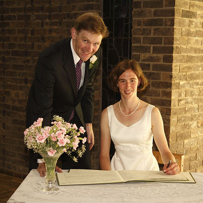

Angie and David got married in Cambridge on Saturday 15 August 2009.
The ceremony was held in the Chapel at Churchill College at 5 PM. After photographs and a drinks reception in the College grounds, we moved to the Fellows' Dining Hall for dinner.
The weekend also featured a dinner for out-of-town guests on Friday and punting on the Backs on Sunday.
Thank you to everyone who helped with the organisation and to everyone who attended. Special thanks go to the wedding party:
Here are some photographs from the day. Please send a link if you have some photographs that you would like to share.
Pre-event information is available for archival purposes.